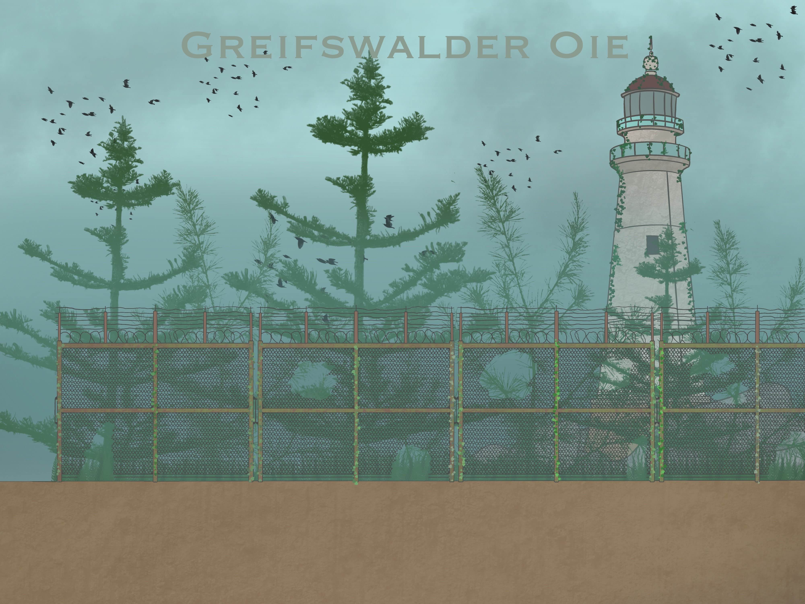

The After Life
Spielmechaniken
Kern-Gameplay
- Siedlungsbau: Gebäude errichten, Bewohner zuweisen, Verteidigung ausbauen.
- Zombienester zerstören: Nester aufspüren, ausräuchern und die Region sichern.
- Schnellreise: Zwischen wichtigen Orten wie Camp, Dänholm und Greifswalder Oie reisen.
- NPC-Begleiter: Begleiter wie Max und andere Überlebende unterstützen den Spieler.
- Wellenangriffe: Regelmäßige Zombie-Wellen testen die Verteidigung der Siedlung.
- Handel & Währung: Ressourcen tauschen, Ausrüstung kaufen, Söldner anheuern.
- Kampf: Nah- und Fernkampfwaffen, begrenzte Munition, taktisches Vorgehen.
- Fähigkeiten: Der Spieler schaltet nach und nach neue Skills und Boni frei.
